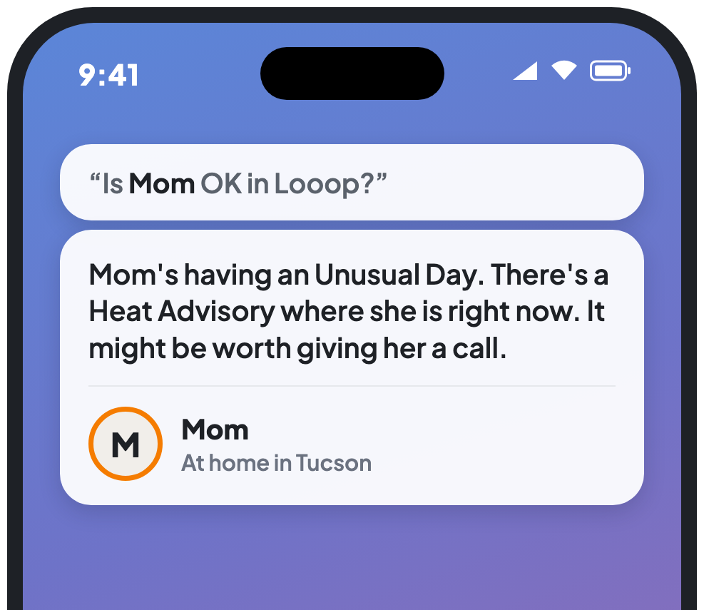

Ask Siri about your Loved Ones
Set it up once, then ask Siri how everyone's doing.

Set up Siri for Looop
Four quick steps. It takes about a minute.
Before you start: you'll need an iPhone with iOS 17 or newer and the latest version of Looop from the App Store.
-
1
Open Looop and make sure you're signed in.
You only need to do this once. It lets Siri know who's in your group.
-
2
Say "Hey Siri, how's everyone in Looop?"
Looop sounds just like "loop."
-
3
The first time, your iPhone asks to turn on Looop with Siri. Tap Turn On.
Siri then answers, and learns your Loved Ones' names for next time.
-
4
Now ask about anyone by first name, like "Hey Siri, is Mom OK in Looop?"
Use the name they go by in Looop. Siri answers without opening the app.
Siri asks you to unlock your iPhone first
Before Siri shares how someone is doing, where they are, or their phone battery, your iPhone needs to be unlocked. Questions about the weather work anytime.
Make your own phrase
Want to say something shorter, like "Family check"?
-
1
Open the Shortcuts app and tap + in the top-right corner.
-
2
Search for Looop and tap How's everyone?
Or pick another, like "Is a Loved One OK?"
-
3
Tap the name at the top, type Family check, then tap Done.
Now just say "Hey Siri, family check."
Troubleshooting
Find what Siri did, then try the fixes under it.
Siri says "I can't help you with that."
- Ask again. If your iPhone asks to turn on Looop with Siri, tap Turn On.
- Open Looop, make sure you're signed in, then ask again.
- Restart your iPhone. Siri sometimes needs this after an update.
Siri asks whose contact info you want, or offers to translate
- Siri didn't catch "Looop." Start with it instead: "Ask Looop how everyone is doing."
- Say Looop just like "loop."
Siri answers with Find My, or a map
- Add "in Looop" to the end, like "Is Mom OK in Looop?" Without it, Siri may pick another app.
Siri can't find someone
- Use the first name they go by in Looop. If they're "Mom" in Looop, say "Mom."
- Ask "How's everyone in Looop?" once. That's how Siri learns new names.
- Make sure they're in one of your Looop groups.
Siri asks you to open Looop and sign in
- Open Looop and sign in. Then you can close it and ask again.
Siri asks you to unlock your iPhone
- Unlock it and Siri will answer. This keeps anyone holding your locked iPhone from hearing about your family.
- Questions about the weather work without unlocking.
Siri says it can't reach Looop right now
- Check that your iPhone is online, then try again in a minute.
Siri says there's nothing to share about someone
- They may not have finished setting up Looop yet. Their card in Looop shows what's left.
- Alerts may be off for them. You can turn them on from their card in Looop.
Siri doesn't respond at all
- Open Settings, tap Apple Intelligence & Siri, and make sure Siri is on.
- Make sure your iPhone has iOS 17 or newer and the latest version of Looop.
Still stuck? Send us a note through our Get in Touch form. We read everything.
What you can ask
Use your own words. Just say "in Looop" at the end, or start with "Ask Looop."
How they're doing
- "Is Mom OK in Looop?"
- "How's Ethan doing in Looop?"
- "Does Dad need a call in Looop?"
Where they are
- "Where's Ethan in Looop?"
- "Is Mom home in Looop?"
- "Is Ethan driving in Looop?"
What they're up to
- "What's Evelyn up to in Looop?"
- "How's Ethan's day going in Looop?"
- "Catch me up on Mom in Looop."
The weather where they are
- "What's the weather near Mom in Looop?"
- "Is it raining where Ethan is in Looop?"
- "Is it cold where Grandma is in Looop?"
Their phone
- "Is Ethan's phone dead in Looop?"
- "How much battery does Mom have in Looop?"
- "When did Looop last hear from Dad?"
Everyone at once
- "How's everyone in Looop?"
- "Who needs a call in Looop?"
- "Is anyone having an Unusual Day in Looop?"